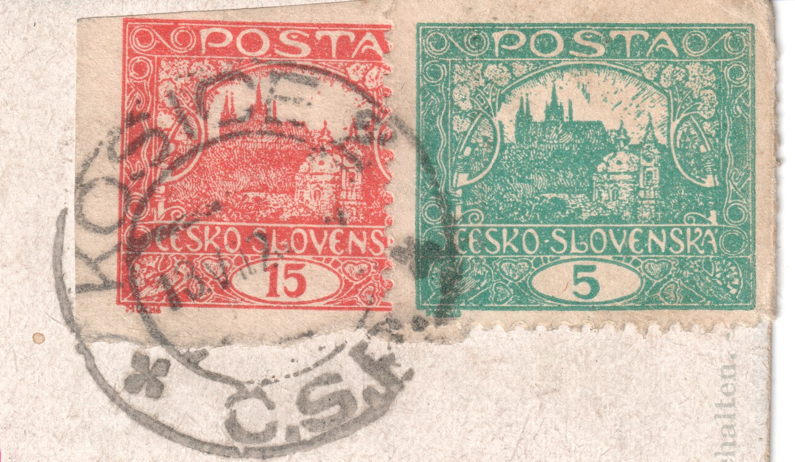
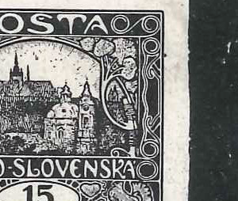

Články o 15hArticles on the 15h
Studie a nálezy k hodnotě 15h i k ostatním hodnotám emise. Odkazy vedou na plné znění.Studies and finds on the 15h and on the other values of the issue. The links lead to the full text.
Nález: neperforovaná 15h z TD VI poštovně použitáFind: an imperforate 15h from plate VI postally used
Pohlednice s razítkem KOŠICE 2 z 13. VII. 1920 nese neperforovanou 15h — a určení desky a pole (klasifikátor desek + poziční model, potvrzeno bodovými vadami) ji přiřadilo známkovému poli 34 šesté tiskové desky. Nezoubkované archy jsou běžné jen u TD 1–2; poštovně použitá neperforovaná známka z TD 5 či TD 6 je vzácností.A postcard cancelled KOŠICE 2 on 13 July 1920 carries an imperforate 15h — and plating (plate classifier + position model, confirmed by point flaws) attributed it to field 34 of the sixth plate. Imperforate sheets are common only for plates 1–2; a postally used imperforate stamp from plate 5 or 6 is a rarity.

Celý článekFull article → · bod Košice na mapě razítekthe Košice point on the cancel map
Prasklá tisková deska na 11/IICracked printing plate at 11/II
Na 11. známkovém poli 2. tiskové desky se vyskytuje výrazná prasklina levého horního rohu, vzniklá zřejmě poškozením desky při pravidelném čištění. Prasklina se vyvíjela v pěti fázích — od slabé deformace až po konečnou podobu — a je doložena v nezoubkované úpravě i v zoubkováních A, B, C a F. Známky s touto vadou jsou vzácné.Field 11 of the second plate shows a pronounced crack in the upper-left corner, probably caused by damage during routine plate cleaning. The crack developed in five phases — from a faint deformation to its final state — and is documented imperforate as well as in perforations A, B, C and F. Stamps with this flaw are scarce.

Celý článekFull article → · ZP 11 v galerii TD IIField 11 in the plate II gallery
Poškozený rám na 60/VIDamaged frame at 60/VI
Monografie uvádí 60. pole šesté desky jako pole s vybranou deskovou vadou — výběžkem na pravém okraji rámu. Studie zkusmých tisků ukázala, že se objekt během tisku vyvíjel: údržbou desky došlo k poškození, které původní výběžek zdeformovalo. Poškozená verze je doložena v zoubkováních B a C; poměr výskytu obou variant je zhruba 1:1.The Monograph lists field 60 of the sixth plate as carrying a selected plate flaw — a protrusion on the right frame edge. A study of trial prints showed the object evolved during printing: plate maintenance caused damage that deformed the original protrusion. The damaged state is documented in perforations B and C; the two variants occur roughly 1:1.

Celý článekFull article → · ZP 60 v galerii TD VIField 60 in the plate VI gallery
Světlina na 20/VA white spot at 20/V
Na 20. známkovém poli V. tiskové desky se u části známek neuzavírá vnější rám: spodní linka končí před pravým dolním rohem a roh zůstane otevřený. Měření na osmnácti kusech ukázalo spojitou škálu od otevřeného rohu k uzavřenému — tedy světlinu, která vzniká a sílí v průběhu tisku, ne jednorázové poškození desky. Doložena je v zoubkování B a C i na kusu s doplatním přetiskem 30 DOPLATIT.On field 20 of the fifth printing plate the outer frame fails to close on part of the stamps: the bottom line stops short of the bottom-right corner and the corner stays open. Measurement on eighteen copies showed a continuous scale from an open corner to a closed one — that is, a white spot that arises and grows during printing, not one-off damage to the plate. It is documented in perforations B and C and on a copy with the 30 DOPLATIT postage-due overprint.

Celý článekFull article → · ZP 20 v galerii TD VField 20 in the plate V gallery
Celistvost: Poklad za „babku“A cover: treasure for a song
Jozef Džubák popsal obálku běžného dopisu ze Smíchova do Pavlic (srpen 1920, porto 60 h), vyfrankovanou čtyřmi známkami 15 h — a každá z nich pochází z jiné tiskové desky: 67/III, 30/V, 34/IV a 70/VI, ve dvou různých zoubkováních (B a C). Výjimečná kombinace vznikla zřejmě opětovným použitím neznehodnocených známek — a připomíná, že poklady se skrývají i ve zdánlivě běžném materiálu.Jozef Džubák described an ordinary letter from Smíchov to Pavlice (August 1920, 60 h rate) franked with four 15 h stamps — each from a different printing plate: 67/III, 30/V, 34/IV and 70/VI, in two different perforations (B and C). The exceptional combination probably arose from re-use of uncancelled stamps — a reminder that treasures hide in seemingly ordinary material.

Závoje a skvrny (TD II)Smears and spots (plate II)
Průběžně doplňovaný katalog výrobních skvrn a závojů na druhé tiskové desce — doloženy na polích 5, 13, 16, 19, 50, 55, 61, 82, 88 a 95, u některých ve více vývojových fázích.A continuously updated catalogue of production spots and smears on the second plate — documented at fields 5, 13, 16, 19, 50, 55, 61, 82, 88 and 95, some in several development phases.
Zkušební tisk 15h a co se s deskou dělo dálA proof of the 15h and what happened to the plate next
Modrý zkušební tisk na křídovém papíře, známkové pole 96 první tiskové desky. Tisk je ostrý po celé ploše — deska ještě nebyla opotřebovaná. Srovnání s produkčním otiskem téhož pole ukazuje, že se mezi oběma tisky do kresby zasahovalo: spirála se z otevřené (Is) změnila na zavřenou (IIs) a upraven byl i vějíř u pravé holubice. Celý rozbor i výřezy jsou na stránce Zkušební tiskyProofs.A blue proof on coated paper, stamp field 96 of the first printing plate. The impression is sharp throughout — the plate was not yet worn. A comparison with the production impression of the same field shows that the design was worked on between the two: the spiral changed from open (Is) to closed (IIs), and the fan at the right-hand dove was altered as well. The full account and the details are on the Zkušební tiskyProofs page.
Články k ostatním hodnotám emiseArticles on other values of the issue
Studie k hodnotám 5h, 10h, 100h, 120h, 300h a 500h i přehled závojů a skvrn napříč emisí najdete na hlavním webu emise — v rubrice Články.Studies on the 5h, 10h, 100h, 120h, 300h and 500h, and the overview of smears and spots across the issue, are on the main site of the issue — in the Articles section.